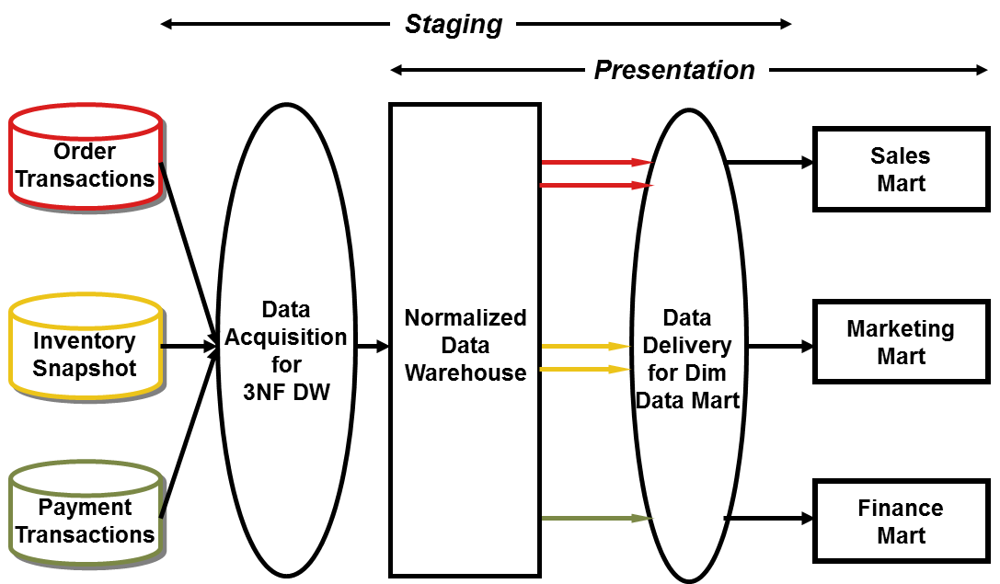
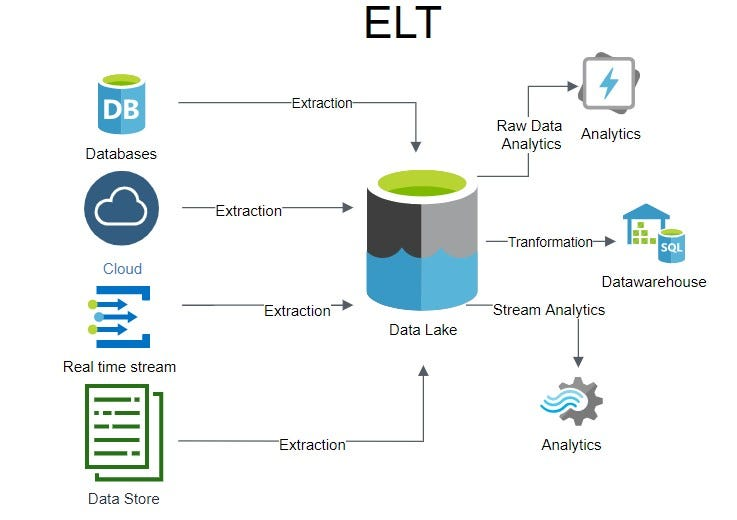

Comprehensive Academic Reference and Architectural Masterguide: From Traditional Data Warehousing to the Modern Data Lakehouse
Foundational Paradigms: Why Operational Databases Are Insufficient for Analytics
In an undergraduate Computer Science curriculum, students initially learn to design relational databases using Entity-Relationship (ER) modeling and Third Normal Form (3NF) to support day-to-day application operations
Conversely, executive decision-making, trend forecasting, and historical auditing require Online Analytical Processing (OLAP). Analytical workloads scan millions or billions of historical records across multiple years to compute aggregations, moving averages, and cross-departmental correlations. Executing complex, multi-table analytical joins directly against a live OLTP database triggers severe resource contention, as table locks block incoming customer transactions, CPU and memory buffers are exhausted by full-table scans, and operational throughput collapses. Beyond immediate resource contention, operational databases exhibit four fundamental structural deficiencies when tasked with enterprise analytics. First, OLTP systems lack historical depth because they rely on transient data—data in which modifications to existing records overwrite and eliminate the previous version in place, such as updating a customer's current address or account tier—and frequently purge records older than 60 to 90 days to maintain compact index sizes. This destruction of prior states erases the longitudinal timeline required for trend analysis. Second, enterprises suffer from heterogeneous fragmentation (data silos), operating isolated systems such as Siebel for Customer Relationship Management (CRM), Oracle Financials for accounting, and custom microservices for manufacturing, each generating colliding local keys and conflicting semantic definitions. Third, normalization imposes a severe join penalty; answering a straightforward business question such as calculating quarterly product revenue by customer demographic against a 3NF operational schema requires joining 10 to 15 tables at runtime, resulting in prohibitive query latency. Fourth, operational databases lack subject orientation, as they are structured around specific software workflows like invoice logging or ticket tracking rather than unified corporate subjects like Customer, Product, or Vendor.
To resolve this architectural conflict, Bill Inmon—widely recognized as the father of data warehousing—formally defined a Data Warehouse as a subject-oriented, integrated, time-variant, and non-volatile collection of data in support of management's decision-making process. In contrast, Ralph Kimball defined the data warehouse functionally as a copy of transactional data specifically structured for query and analysis, or simply the place where the enterprise publishes used data. Every pillar of Inmon's four-part canonical definition represents a mandatory concept in academic evaluations. Subject-oriented means the repository is organized around major enterprise entities (such as Customer, Product, or Sales) rather than operational application boundaries, ensuring that if an organization replaces its underlying CRM software next year, the warehouse schema remains stable. Integrated signifies that semantic and structural conflicts across disparate source systems—such as conflicting naming conventions, data formats, or definitions of what constitutes an "active" customer—are resolved once during ingestion into a single reconciled format. Time-variant indicates that every record in the warehouse is tied to an explicit temporal context (a timestamp, date key, or validity interval) across a 5-to-10-year historical time horizon, enabling accurate point-in-time reconstruction. Finally, non-volatile guarantees that once data enters the warehouse, it is never overwritten or deleted by operational updates; historical records remain immutable for audits, reconciliations, and longitudinal reporting long after the operational state has changed.
Core Foundational Sub-Terms: OLTP vs. OLAP, ETL vs. ELT, and Schema Enforcement
A rigorous mastery of data architecture requires distinguishing the operational mechanisms that process, move, structure, and query data across transactional and analytical tiers.
| Architectural Dimension | Operational Database (OLTP) | Analytical Data Warehouse (OLAP) |
|---|---|---|
| Primary Purpose | Execute real-time day-to-day business transactions and application workflows. | Support strategic decision-making, historical reporting, and multidimensional analysis. |
| Primary User Base | Frontline clerks, cashiers, operational staff, customer-facing web apps, and DBAs. | Knowledge workers, executives, business analysts, and data scientists. |
| Data Content & Horizon | Current, operational, transient values; typically 30 to 90 days of active history. | Historical, archived, summarized, and reconciled data; 5 to 10+ years of time horizon. |
| Database Schema Design | Highly normalized Entity-Relationship (3NF/BCNF) to avoid write redundancy. | Denormalized Dimensional (Star/Snowflake) or hybrid historized (Data Vault / 3NF EDW). |
| Workload Characteristics | Short, atomic, repetitive read/write/update transactions touching a few rows. | Complex, read-intensive batch queries scanning millions of rows for aggregations. |
| Concurrency & Scale | Thousands of concurrent users; database sizes typically range from Megabytes to Gigabytes. | Lower concurrency (tens to hundreds of analysts); Very Large Databases (VLDB) from 100 GB to Petabytes. |
Within the OLAP paradigm, analytical engines and multidimensional operations are categorized into specific functional primitives that frequently appear in university examinations. At the server storage level, Relational OLAP (ROLAP) stores detailed data in standard relational tables and translates multidimensional queries into dynamic SQL, allowing massive data volume scalability. Multidimensional OLAP (MOLAP) pre-computes and stores aggregations in proprietary multidimensional array cubes—often called Multidimensional Databases (MDDB)—delivering ultra-fast query responses at the cost of rigid cube-rebuild windows and limited volume scalability. Hybrid OLAP (HOLAP) combines both approaches by retaining detailed atomic records in relational storage (ROLAP) while storing pre-calculated summary aggregations in multidimensional cubes (MOLAP). Conceptually, an OLAP Data Cube represents numeric facts across multiple dimensional facets such as Time, Location, and Product. Analysts navigate the data cube through five canonical operations: Roll-Up (or Drill-Up), which aggregates data by climbing up a concept hierarchy (such as summarizing daily city sales into annual country sales) or by reducing dimensions; Drill-Down, the inverse operation that navigates from high-level summaries down to fine-grained atomic detail (such as stepping from annual revenue down to quarterly, monthly, and daily transactions); Slice, which selects a single value for one dimension to cut a two-dimensional plane out of a three-dimensional cube (for example, filtering all sales across Products and Regions strictly for Year = 2025); Dice, which extracts a smaller sub-cube by applying filter ranges across two or more dimensions simultaneously (such as Year IN (2025, 2026) AND Region IN ('North', 'East')); and Pivot (or Rotate), which rotates the dimensional axes of a cross-tabulation report to view the metrics from an alternative structural perspective.
Equally fundamental is the distinction between data integration pipelines (ETL versus ELT) and schema binding strategies (Schema-on-Write versus Schema-on-Read). In a classical Extract, Transform, Load (ETL) pipeline, data is first extracted from heterogeneous operational systems—capturing either full extracts or incremental change data—into an intermediate staging area. Next, on a dedicated ETL server using tools such as Informatica PowerCenter or Talend, the data undergoes transformation: removing noise and erroneous inputs (data cleaning), resolving missing values through binning or imputation, executing multifield transformations (converting one field into multiple fields or vice versa), deduplicating keys, and joining tables. Finally, the reconciled data is loaded and indexed into the target data warehouse. ETL is intrinsically coupled with Schema-on-Write, a discipline wherein the target table structure, column types, and relational constraints must be strictly defined and validated before any record can be written to disk, routing non-conforming rows to rejected data tables. Conversely, in a modern Extract, Load, Transform (ELT) pipeline, raw data is extracted from sources and immediately loaded directly into scalable cloud storage or a cloud data platform without prior structural modification. Transformations are subsequently executed inside the target storage engine itself using distributed processing frameworks such as Apache Spark or cloud SQL engines. Pure Data Lakes pair ELT with Schema-on-Read, meaning raw files (such as JSON, CSV, server logs, or multimedia blobs) are written to storage without schema enforcement, and the structural schema is parsed dynamically by the reading application only at query execution time. While Schema-on-Read maximizes ingestion speed and handles unstructured files effortlessly, it lacks write-time quality gates and risks turning the storage repository into an uncurated data swamp if reading scripts interpret raw files inconsistently.
Why Do So Many Data Warehousing Architectures Exist?
A recurring conceptual question in computer science examinations asks why the industry evolved five distinct data architectures rather than converging on a single universal model. Multiple architectures exist because every data architecture is an engineering optimization around a specific operational constraint—such as enterprise consistency, BI delivery speed, source schema volatility, unstructured data scale, or transactional unification—and no single classical paradigm could optimize for all constraints simultaneously.
As enterprise computing matured from the 1970s to the present, organizations encountered sequential bottlenecks that forced architectural innovation. In the 1980s and 1990s, when isolated departmental databases produced contradictory financial figures at executive board meetings, Bill Inmon introduced the top-down, normalized 3NF Enterprise Data Warehouse (EDW) to enforce a single, canonical corporate source of truth. However, because Inmon's normalized 3NF warehouse took years to model and required complex 12-table SQL joins that business analysts could not write or execute quickly, Ralph Kimball popularized bottom-up Dimensional Modeling (Star Schemas and the Enterprise Bus Architecture) to deliver sub-second, intuitive Business Intelligence (BI) reporting in rapid iterations. By the late 1990s and 2000s, engineers realized that both 3NF and Star Schemas break down when operational source systems mutate rapidly or when banking, healthcare, and defense regulators demand 100% historical traceability of every raw record. Dan Linstedt invented Data Vault Modeling (and subsequently Data Vault 2.0) to decouple immutable business keys (Hubs) from relationships (Links) and changing attributes (Satellites) in an agile, insert-only, audit-ready foundation. In the 2010s, the explosion of unstructured data (video, audio, free text, IoT sensor streams) and Machine Learning (Python/R) exposed the inability of proprietary relational warehouses to store non-tabular files cheaply, giving rise to the Schema-on-Read Data Lake on cloud object storage. Finally, because maintaining both a Data Lake and a separate Data Warehouse created fragile dual pipelines, stale duplicated data, and unreliable data swamps lacking ACID transactions, the Data Lakehouse (pioneered by Databricks with Delta Lake) emerged to unify open-format cloud lake storage with warehouse-grade ACID reliability and SQL performance.
![Five generations of data architecture: 1. Traditional Inmon top-down (Operational Sources to Central ETL to Normalized 3NF EDW to Departmental Data Marts to BI Reports), 2. Kimball Bus bottom-up (Dimensional ETL to Conformed Star Schema Marts to Fast BI Queries), 3. Data Vault 2.0 (Volatile Sources to Staging to Hubs, Links and Satellites to Star Schema Marts to Auditable BI), 4. Data Lake (Structured and Unstructured Data to Cloud Blob Storage to Custom Prep Engine to Data Science and ML), and 5. Lakehouse (All Data Formats to Delta Lake Bronze, Silver, Gold to Delta Engine to BI, Streaming, ML and AI).](FiveGenerationsOfDatawarehouseArchitecture.png)
Architecture 1: Traditional Data Warehousing (Inmon Corporate Information Factory)
Need, Origin, and Philosophical Foundation
Formulated by Bill Inmon beginning in the early 1970s and popularized in the mid-1980s, Traditional Data Warehousing—formally termed the Corporate Information Factory (CIF)—was designed to eliminate enterprise-wide data inconsistency. When individual departments such as Finance, Marketing, and Operations extract data directly from operational systems to build isolated reporting databases, they apply contradictory business rules and filtering logic, producing multiple conflicting versions of the truth. Inmon's philosophy is strictly top-down and governance-first: an organization must first construct a centralized, enterprise-wide repository normalized to Third Normal Form (3NF) that captures atomic (lowest-level) transactional data across the entire business. Like a public library organized under the Dewey Decimal System, every entity in Inmon's warehouse has a single canonical shelf. Only after this centralized Enterprise Data Warehouse (EDW) is populated and reconciled are departmental subsets—termed dependent data marts—derived from it to serve end-user analytical needs.
Full Architectural Topology: Structural and Functional Explanation
In academic computer science curricula, Traditional Data Warehousing is examined through two complementary structural frameworks: the Physical Multi-Tier Architecture (Single-tier, Two-tier, and Three-tier) and Inmon's Four-Level Corporate Data Environment. In a Single-Tier Architecture, the objective is to minimize disk storage volume by removing physical data redundancy, placing a virtual warehouse—a set of SQL views—directly over operational databases. Single-tier designs are rarely implemented in practice because analytical view evaluation directly consumes OLTP compute resources. A Two-Tier Architecture physically separates the operational source systems from the data warehouse server and connects front-end client tools directly to the warehouse. However, two-tier systems face severe network connectivity bottlenecks, cannot scale horizontally, and fail to support a large number of concurrent end-users. Consequently, the Three-Tier Architecture represents the canonical industry standard. Its Bottom Tier comprises the operational source extractors, the Data Staging Area where ETL cleansing and integration occur, the centralized relational EDW database server, and the Metadata Repository. Its Middle Tier houses an OLAP server (implemented as ROLAP, MOLAP, or HOLAP) alongside departmental data marts that project normalized atomic data into query-optimized multidimensional structures. Its Top Tier contains the front-end client layer, including query and reporting interfaces, executive dashboards, and data mining tools.
Within this physical infrastructure, Inmon logically partitions the enterprise database environment into four progressive levels: the Operational Level containing raw OLTP application databases; the Atomic (EDW) Level containing the centralized, process-neutral, normalized 3NF warehouse that preserves detailed historical records; the Departmental (Data Mart) Level containing summarized or dimensional tables tailored for specific business units, physically separated from but exclusively fed by the atomic EDW; and the Individual Level providing ad-hoc analytical sandpits and heuristic mining workspaces. To construct the atomic EDW via a spiral development methodology, Inmon prescribes three top-down modeling stages: high-level Entity-Relationship Diagrams (ERD) that map corporate subject areas, mid-level Data Item Sets (DIS) that specify detailed attributes, keys, and normalization rules within each subject, and the final Physical Model tuned for disk storage, partitioning, and indexing.
![Inmon Corporate Information Factory architecture: operational systems (Enterprise Applications, CRM, Business Processes) feed the Integration and Transformation Layer performing ETL, which populates the Enterprise Data Warehouse (EDW). The EDW serves the Data Marts layer via Data Delivery (ETL) into departmental data marts, which feed Business Intelligence reports and dashboards. The EDW also feeds an Exploration Warehouse for data mining, while the Integration and Transformation Layer separately populates the Operational Data Store (ODS) serving operational reporting.](Traditional%20Data%20Warehousing%20(Inmon%20Corporate%20Information%20Factory).jpg)
Role and Function of Sub-Terms and Indirectly Involved Concepts
Every sub-component in the Inmon architecture performs a specialized governance role. The Data Staging Component is a temporary, non-user-accessible landing zone between operational sources and the EDW where extracted files are buffered, cleaned of noise, validated against syntactic rules, and standardized prior to warehouse loading. Reconciled Data refers to the detailed, current-to-historical data residing inside the central 3NF EDW after all source naming, formatting, and semantic conflicts have been resolved, serving as the unified foundation for the entire enterprise. Third Normal Form (3NF) is the relational modeling discipline applied to the EDW layer wherein every non-key attribute is functionally dependent solely on the primary key, eliminating data duplication and ensuring that a customer's address or status is updated in one canonical table rather than across millions of order records. A Dependent Data Mart is a departmental database subset (such as Finance or Marketing) that extracts its data exclusively from the central 3NF EDW via a secondary ETL pipeline; this contrasts with an Independent Data Mart, which extracts directly from operational sources and recreates unintegrated silos. Finally, the Metadata Repository and Data Dictionary govern the environment: while the Data Dictionary provides the systematic description of syntactic database structures (tables, attribute types, and foreign key relationships), the broader Metadata Repository maps technical warehouse schemas to familiar business terms, tracking ETL lineage, transformation logic, and refresh timestamps.
Concrete Structural and Functional Example
Consider a multinational retail enterprise integrating customer and order records from an online e-commerce database (Web_Users) and a physical branch database (Store_Clients). In an Inmon 3NF EDW, geographic hierarchies and customer attributes are normalized into separate canonical tables so that city, region, and account tier descriptions are never redundantly repeated inside order transactions. Because the warehouse must remain time-variant and non-volatile, historical changes to a customer's tier (such as upgrading from Pro in Q2 to Enterprise in Q3) are tracked by incorporating an Effective_Start_Date into the primary key of the canonical EDW_CUSTOMER table, which then cascades down as a composite foreign key into child order tables.
| Canonical 3NF Table | Primary Key (PK) & Foreign Keys (FK) | Core Normalized Attributes | Sample Historical Record State |
|---|---|---|---|
EDW_REGION |
Region_ID [PK] |
Region_Name |
(10, 'South Asia') |
EDW_CITY |
City_ID [PK], Region_ID [FK] |
City_Name |
(101, 10, 'Lahore') |
EDW_CUSTOMER |
Customer_EDW_ID [PK], Effective_Start_Date [PK], City_ID [FK] |
Effective_End_Date, National_ID, Full_Name, Tier_Code |
(5001, '2025-04-01', 101, '2025-06-30', '35202-111', 'Ali Raza', 'Pro') followed by (5001, '2025-07-01', 101, '9999-12-31', '35202-111', 'Ali Raza', 'Enterprise') |
EDW_ORDER_HEADER |
Order_EDW_ID [PK], Customer_EDW_ID [FK], Customer_Effective_Date [FK] |
Order_Date, Order_Status_Code |
(90042, 5001, '2025-04-01', '2025-05-15', 'COMPLETED') |
From this normalized 3NF spine, a secondary departmental ETL pipeline joins EDW_REGION, EDW_CITY, EDW_CUSTOMER, and EDW_ORDER_HEADER to populate a denormalized Finance_Quarterly_Mart so financial analysts can run Q2 reports using the exact Q2 Pro customer state.
Step-by-Step Preparation and Implementation Guide
Preparing a Traditional Inmon Data Warehouse follows a disciplined five-phase engineering lifecycle. First, enterprise architects construct the corporate Entity-Relationship Diagram (ERD) by interviewing domain stakeholders to define high-level subject areas (Customer, Product, Account, Location) completely detached from existing operational application schemas. Second, data modelers expand each subject area into detailed Data Item Sets (DIS) and normalize the relational structures to Third Normal Form (3NF), establishing canonical primary keys, temporal snapshot intervals, and foreign key constraints. Third, data engineers build the Data Staging Area and develop the primary ETL pipeline to extract raw data from heterogeneous OLTP systems, execute data profiling and cleaning to remove noise, resolve cross-system naming and semantic conflicts, and load the reconciled atomic data into the 3NF EDW. Fourth, engineers design dependent departmental data marts—typically structured as dimensional schemas or materialized views tailored to Finance, Marketing, or Operations—and construct secondary ETL routines that feed those marts exclusively from the central 3NF EDW. Fifth, Business Intelligence reporting dashboards and OLAP query tools are connected strictly to the departmental data marts, isolating the central 3NF warehouse from ad-hoc read contention.
Architectural Limitations and Failure Modes
Despite its unmatched definitional authority, the Inmon paradigm suffers from four major practical limitations. First, it requires massive upfront capital investment, specialized enterprise modeling expertise, and protracted development timelines before delivering initial business reports, causing many projects to stall during annual budget reviews. Second, as Kent Graziano and Dan Linstedt demonstrate, maintaining historical snapshots in 3NF requires embedding effective dates inside primary keys; cascading these time-driven composite primary keys down through deep parent-child foreign key hierarchies creates severe relational maintenance complexity. Third, the architecture is brittle when source schemas mutate: because an entity such as Customer lives in one canonical load-bearing table (EDW_CUSTOMER), accommodating a new source attribute requires an ALTER TABLE schema migration, historical backfill decisions, and cascading modifications across every downstream mart pipeline that reads from the spine. Fourth, querying the 3NF EDW directly imposes a heavy join penalty (frequently requiring 10 to 12 table joins), while maintaining two separate ETL hops (Source to EDW, and EDW to Data Mart) increases end-to-end data latency.
Architecture 2: Kimball Bus Architecture (Dimensional Modeling)
Need, Origin, and Philosophical Foundation
Developed by Ralph Kimball in the mid-to-late 1980s—building upon foundational dimensional concepts pioneered by General Mills, Dartmouth University, and AC Nielsen in the 1960s and 1970s—the Kimball Dimensional Modeling Approach emerged as a pragmatic, business-driven alternative to Inmon's top-down paradigm. If Inmon's warehouse is an academic library cataloged by strict normalization rules, Kimball's warehouse is a high-speed newsstand designed so business users can grab the exact metrics they need and leave immediately. Kimball opposed isolating end-users during long architectural modeling phases, championing instead a bottom-up, user-requirements-driven methodology that delivers analytical value rapidly. Rather than normalizing the entire corporation upfront, engineers select a single high-priority business process (such as Retail POS Checkout), engage business analysts early, and build a denormalized Dimensional Data Mart structured as a Star Schema. To prevent these iterative data marts from degenerating into incompatible departmental silos, Kimball introduced the Enterprise Data Warehouse Bus Architecture: all individual data marts plug into a standardized backbone of shared, common dimension tables known as Conformed Dimensions (such as a single unified Dim_Date, Dim_Customer, and Dim_Product). Consequently, in Kimball's architecture, the Enterprise Data Warehouse is defined not as a separate centralized 3NF repository, but as the integrated union of all conformed dimensional data marts.
Full Architectural Topology: Structural and Functional Explanation
A Kimball Bus Architecture is organized into four distinct functional zones that separate back-room data preparation from front-room analytical consumption. At the ingestion boundary lie the Operational Source Systems, comprising the heterogeneous OLTP databases that capture raw business events. Data flows from these sources into the ETL Back-Room (Data Staging and Cleansing Layer), where engineers clean noise, standardize attributes, manage historical dimension versions (Slowly Changing Dimensions), generate integer surrogate keys, and assemble dimensional structures. A critical operational rule of Kimball ETL is sequential dependency: dimension table ETL jobs must always execute and commit before fact table ETL jobs can run, because the fact table pipeline must look up and substitute the newly generated dimension surrogate keys for every incoming transaction row. Once transformed, the data is loaded into the Presentation Layer (Dimensional Data Marts on the Kimball Bus), where central numeric Fact Tables connect via one-to-many ($1:M$) relationships to surrounding denormalized Dimension Tables in Star, Snowflake, or Fact Constellation schemas. Finally, the Front-Room BI and Analytics Layer connects reporting dashboards, OLAP cubes, and ad-hoc SQL clients directly to the Star Schemas, executing rapid single-hop joins that return aggregations in seconds.

Role and Function of Sub-Terms and Indirectly Involved Concepts
Because university computer science papers heavily test dimensional modeling vocabulary, examinees must master both the structural anatomy and functional behavior of every Kimball sub-term. The foundational concept is the Grain (Data Granularity), which defines the exact business meaning of a single row in a Fact table—for example, one row per individual line item scanned on a customer checkout receipt. Declaring the grain is mandatory before selecting dimensions or facts, as mixing multiple grains within a single fact table causes catastrophic double-counting errors during SQL aggregation.
At the center of a dimensional schema sits the Fact Table, which stores the quantitative, numeric performance measurements of a business process alongside foreign keys pointing to surrounding dimension tables. Fact measures are classified into three mathematical categories based on how they aggregate across dimensions: Additive facts (such as Sales_Quantity and Revenue_Amount) can be summed validly across all dimensions; Semi-Additive facts (such as Account_Balance, Inventory_On_Hand, or Chargeback_Exposure) can be summed across products or stores, but never across the Time dimension, since adding Monday's account balance to Tuesday's balance is meaningless and requires an average or period-end snapshot instead; and Non-Additive facts (such as Unit_Price or Profit_Margin_Ratio) cannot be summed across any dimension and must be calculated from underlying additive numerators and denominators. Structurally, Kimball defines four distinct types of Fact tables to model different operational realities. A Transactional Fact Table records one row per atomic business event at the instant it occurs (such as an ATM withdrawal or POS scan). A Periodic Snapshot Fact Table records one row summarizing status or performance over a regular, recurring time interval, such as fact_customer_monthly_snapshot capturing a customer's chargeback exposure and open support case count at the end of every month. An Accumulating Snapshot Fact Table records one row covering the entire lifecycle of a finite process with well-defined milestones—such as fact_order_lifecycle, which stores one row per order containing multiple milestone date foreign keys (Created_Date, Paid_Date, Shipped_Date, Delivered_Date, Refunded_Date) that are updated in place as the order progresses through fulfillment. Finally, a Factless Fact Table contains only dimensional foreign keys and zero numeric measures, serving to track event occurrences (such as student lecture attendance) or promotional coverage.
Surrounding the fact table are Dimension Tables, which store the textual, descriptive context (who, what, where, when, and why) used to filter (WHERE), group (GROUP BY), and label analytical queries. Every dimension table is keyed by a Surrogate Key—a system-generated, meaningless sequential integer primary key assigned by the ETL pipeline instead of the operational natural key. Surrogate keys insulate the warehouse from operational key changes, resolve key collisions across disparate ERPs, accelerate joins via compact 4-byte integers, and enable historical version tracking. When a dimension table is standardized and shared identically across multiple fact tables and data marts on the Enterprise Bus, it is termed a Conformed Dimension; conformed dimensions allow analysts to execute drill-across queries that combine metrics from separate business processes (such as comparing Sales Revenue against Inventory On Hand by Product and Date) in a single report.
To preserve historical accuracy when descriptive attributes change in operational systems—a phenomenon called Slowly Changing Dimensions (SCD)—Kimball specifies three primary handling mechanisms. SCD Type 1 overwrites the old attribute value in place with the new value, destroying historical states so all past sales appear under the new attribute. SCD Type 2—the industry gold standard for historical tracking—preserves full history by inserting a brand-new dimension row with a newly generated Surrogate Key, the same natural business key, and explicit validity columns (Effective_Start_Date, Effective_End_Date, and Current_Flag), ensuring that historical fact records remain bound to the exact surrogate key that was active when the transaction occurred. SCD Type 3 adds a dedicated column (such as Previous_Tier alongside Current_Tier) on the existing row, tracking only the immediate prior change. Beyond standard dimensions, architects utilize three specialized dimension patterns. A Degenerate Dimension is an operational transaction control number (such as an Invoice_Number or Order_ID) stored directly inside the Fact Table without a separate dimension table because all its descriptive attributes have already been extracted into other dimensions. A Junk Dimension consolidates miscellaneous low-cardinality boolean flags, status indicators, and payment codes into a single compact dimension table to prevent cluttering the fact table with dozens of foreign keys. A Role-Playing Dimension occurs when a single physical dimension table (most commonly Dim_Date) is joined multiple times to the same fact table via distinct foreign keys (such as Order_Date_SK, Ship_Date_SK, and Delivery_Date_SK) using SQL views or aliases so each join plays a distinct semantic role.
Finally, dimensional models are physically instantiated in one of three multidimensional schema topologies. In a Star Schema, a single central Fact table references fully denormalized Dimension tables in a one-to-many ($1:M$) relationship where dimension primary keys flow into the fact table as foreign keys, forming a visual star that maximizes query performance by requiring only single-hop joins. In a Snowflake Schema, the dimension tables of a Star Schema are further normalized into multiple related sub-dimension tables (for example, normalizing Dim_Product into Dim_Product, Dim_Category, and Dim_Department), which saves disk space on repeated hierarchical strings but slows query execution by requiring multi-table joins across dimension hierarchies. In a Fact Constellation Schema (also called a Galaxy Schema), multiple Fact tables share common Conformed Dimension tables, physically realizing the enterprise-wide Kimball Bus Architecture.
| Schema Characteristic | Star Schema | Snowflake Schema | Fact Constellation (Galaxy Schema) |
|---|---|---|---|
| Structural Anatomy | 1 Central Fact table surrounded by denormalized Dimension tables. | 1 Central Fact table surrounded by normalized (3NF) Dimension hierarchies. | Multiple Fact tables sharing Conformed Dimension tables. |
| Normalization Level | Denormalized dimensions (redundant hierarchy strings). | Normalized dimensions (eliminates attribute redundancy). | Typically denormalized shared dimensions (can also be snowflaked). |
| Query Complexity & Speed | Simple queries, fewer joins, fastest read execution. | Complex queries, more joins across sub-dimensions, slower reads. | Supports complex cross-process "drill-across" queries via shared dimensions. |
| Storage Footprint | Higher dimension disk usage due to repeated hierarchy text. | Lower dimension disk usage. | High overall footprint as it spans multiple enterprise processes. |
Concrete Structural and Functional Example
In an e-commerce enterprise implementing the Kimball Bus Architecture, two distinct business processes—Order Sales and Warehouse Inventory—are integrated into a Fact Constellation sharing conformed dimensions (Dim_Date and Dim_Product) alongside a customer dimension and a role-playing date structure.
| Dimensional Table | Table Role & Grain / SCD Policy | Primary Key (PK) & Foreign Keys (FK) | Descriptive Attributes / Numeric Fact Measures |
|---|---|---|---|
Dim_Date |
Conformed Role-Playing Dimension (Daily Grain) | Date_SK [PK] (e.g., 20261020) |
Full_Date, Day_Of_Week, Month_Name, Quarter, Year, Is_Holiday_Flag |
Dim_Customer |
Conformed Dimension (SCD Type 2) | Customer_SK [PK] |
Customer_Natural_ID, Customer_Name, Tier_Status (Pro/Enterprise), City, Effective_Start, Effective_End, Is_Current |
Dim_Product |
Conformed Dimension (SCD Type 2) | Product_SK [PK] |
Product_SKU, Product_Name, Brand_Name, Category_Name, Effective_Start, Effective_End, Is_Current |
Fact_Order_Sales |
Transactional Fact (1 row per order line item) | Order_Date_SK [FK], Ship_Date_SK [FK], Customer_SK [FK], Product_SK [FK], Order_ID [Degenerate Dim] |
Quantity_Sold (Additive), Extended_Sales_Amt (Additive), Discount_Amt (Additive) |
Fact_Daily_Inventory |
Periodic Snapshot Fact (1 row per product per warehouse per day) | Date_SK [FK], Product_SK [FK], Warehouse_SK [FK] |
Quantity_On_Hand (Semi-Additive across time), Damaged_Units_Count (Additive) |
Step-by-Step Preparation and Implementation Guide
Designing and preparing a Kimball Dimensional Data Warehouse begins at the enterprise planning level by constructing the Enterprise Data Warehouse Bus Matrix—a tabular grid where rows represent core business processes (such as Orders, Shipments, Returns, and Inventory) and columns represent shared Conformed Dimensions (Dim_Date, Dim_Customer, Dim_Product, Dim_Store), marking intersections to establish governance before writing code. Next, for each individual business process row on the matrix, the engineering team executes Kimball's mandatory Four-Step Dimensional Design Process. In Step 1 (Select the Business Process), the architect selects a specific operational action-verb workflow that generates measurable events (such as Customer Order Fulfillment) rather than an organizational department. In Step 2 (Declare the Grain), the architect formulates a precise statement defining what a single physical row in the fact table represents, always favoring the lowest atomic grain so analysts can roll up data flexibly. In Step 3 (Identify the Dimensions), the architect selects the conformed, role-playing, junk, and degenerate dimensions that provide the descriptive context for that exact grain. In Step 4 (Identify the Facts), the architect selects the numeric performance measures that strictly match the declared grain and classifies their additivity. Once modeled, the ETL pipeline is constructed to extract incremental operational changes, process dimension tables first (handling SCD Type 1/2/3 mutations and assigning integer surrogate keys), process fact tables second (performing surrogate key lookups), and apply physical date partitioning and materialized views for query acceleration.
Architectural Limitations and Failure Modes
While Kimball remains the most widely adopted modeling technique for presentation-layer Business Intelligence due to its query speed and intuitive design, it exhibits four significant structural vulnerabilities when used as a standalone enterprise warehouse. First, as Kent Graziano emphasizes, Star Schemas suffer from severe grain rigidity: if business requirements shift and a fact table's granularity must be modified, re-engineering and backfilling a denormalized fact table containing billions of historical rows is exceptionally costly and disruptive. Second, managing historical accuracy across wide dimensions is complex; if SCD Type 2 pipelines are not engineered flawlessly, or if late-arriving facts and retroactive dimension changes occur, updating historical records becomes a maintenance nightmare. Third, the mandatory sequential dependency requiring dimension ETL to complete before fact ETL limits parallel ingestion throughput for high-velocity data streams. Fourth, if multiple engineering teams build bottom-up Star Schemas rapidly without strict adherence to the Enterprise Bus Matrix and Conformed Dimensions, the organization ends up with hundreds of disconnected star schemas that cannot be joined together, recreating data silos.
Architecture 3: Data Vault 2.0
Need, Origin, and Philosophical Foundation
Invented by Dan Linstedt—who initiated Research and Development in 1990, conducted field testing between 1999 and 2001, and published the foundational specifications between 2000 and 2003—Data Vault Modeling was engineered specifically to overcome the adaptability, scalability, and auditability breakdowns of both 3NF (Inmon) and Star Schemas (Kimball). Linstedt formally defined the Data Vault as a detail-oriented, historical tracking, and uniquely linked set of normalized tables that support one or more functional areas of business, representing a hybrid approach that encompasses the best of breed between Third Normal Form (3NF) and Star Schema. Both Inmon and Kimball implicitly assume that operational source schemas and business rules remain relatively stable over time. Data Vault starts from the opposite assumption: the operational source estate will constantly mutate, companies will undergo mergers and acquisitions, and regulatory auditors (in banking, defense, healthcare, and pharmaceuticals) will demand 100% non-destructive historical lineage tracing every data point back to its exact originating source record.
While Data Vault 1.0 focused strictly on the relational modeling technique, Data Vault 2.0 expanded into a complete enterprise standard resting on Four Pillars. The Methodology Pillar aligns data warehouse lifecycle management with Agile, Scrum, Capability Maturity Model Integration (CMMI), and Total Quality Management (TQM) to deliver repeatable 2-to-4-week iterative sprints. The Architecture Pillar defines a three-tier enterprise blueprint (Staging, Enterprise Data Warehouse Vault, and Information Delivery Star Marts) capable of integrating relational, NoSQL, and unstructured big data sources. The Modeling Pillar introduces deterministic cryptographic Hash Keys in place of sequential surrogate integers to enable massively parallel, dependency-free data loading. Finally, the Implementation Pillar establishes pattern-driven automation templates that generate ingestion and extraction SQL automatically.
Full Architectural Topology: Structural and Functional Explanation
In an enterprise architecture, Data Vault 2.0 does not replace Kimball Star Schemas at the BI consumption layer; rather, the Data Vault serves as the process-neutral Enterprise Data Warehouse (EDW) Foundation Layer positioned between the Staging Area and downstream Kimball Data Marts. Data enters first into the Staging Layer, a temporary landing zone where raw extracts from operational systems are buffered without business modification, stamped with technical load metadata (Load_DTS and Record_Source), and hashed to compute deterministic business key digests. From staging, data flows into the Enterprise Data Warehouse Layer (The Data Vault), which is divided into the Raw Data Vault (RDV) and the Business Data Vault (BDV). The Raw Data Vault stores an unfiltered, unaltered historical record of all source data decomposed into Hubs, Links, and Satellites using a strictly insert-only regime—records are never updated or deleted, preserving every historical state ("good, bad, or indifferent") for forensic auditability. The Business Data Vault sits logically alongside the Raw Vault, storing derived business calculations, soft business rule consolidations, and query-acceleration helper structures (Point-in-Time and Bridge tables) in additional Links and Satellites without mutating the underlying raw audit trail. Finally, the Information Delivery Layer (Presentation Marts) assembles Hubs, Links, and Satellites into denormalized Kimball Star Schemas, views, or flat tables so business analysts and BI dashboards query clean dimensional structures.

Load_DTS.
Role and Function of Sub-Terms: Hubs, Links, Satellites, and Helper Tables
Data Vault modeling employs an extreme form of normalization inspired by biological neural networks, separating every business entity into three repeatable structural components: Hubs (acting like neurons to form the base skeleton), Links (acting like dendrites and synapses to pass associations), and Satellites (acting like memories to house time-variant descriptors).
| Data Vault Entity | Core Architectural Role | Mandatory Column Structure (In Strict Order) | Structural & Functional Constraints |
|---|---|---|---|
| Hub | Stores a unique list of natural enterprise Business Keys. | 1. Hub_Key_ID (Sequence ID or Hash Key [PK])2. Business_Key ([Unique Index])3. Load_DTS (First seen timestamp)4. Record_Source (Originating system) |
Contains zero descriptive attributes; primary key always migrates outward to Links and Satellites; never connects directly to another Hub. |
| Link | Captures $M:N$ associations, transactions, and hierarchies between Hubs or Links. | 1. Link_Key_ID (Sequence ID or Hash Key [PK])2. {Hub/Link_Foreign_Keys 1..N} ([Composite Unique Index])3. Load_DTS4. Record_Source |
Contains zero descriptive attributes; must reference at least 2 parent FKs; resolves all $1:1$, $1:M$, $M:N$, and recursive relationships. |
| Satellite | Stores time-variant descriptive attributes, free-form text, and metrics. | 1. Parent_Key_ID (Hub or Link PK [PK, FK])2. Load_DTS (Delta arrival timestamp [PK])3. Load_End_DTS (Optional expiration)4. {Descriptive_Attributes}5. Record_Source |
Dependent on strictly 1 parent (either one Hub OR one Link, never both); can never be a parent to another table (no snowflaking); insert-only. |
A Hub represents a unique list of identifiable natural Business Keys—attributes that business users and source applications use to locate entities, such as Product_Number, NDA_Application_Number, Patent_Number, Customer_National_ID, or a composite of Customer_Name plus Address. Architects must avoid using system-generated OLTP surrogate integers as Hub business keys because separate systems (such as Siebel and Oracle Financials) independently generate colliding integers for unrelated entities. Business keys have a very low propensity to change and are arranged in an Ontology to map enterprise dependencies. Technically, the Hub ties each business key in a $1:1$ ratio to a surrogate sequence ID or deterministic Hash Key, tracks the exact timestamp (Load_DTS) when the warehouse first saw the key arrive, records the originating system (Record_Source) for audit lineage, and enables real-time ingestion engines to load transaction keys even before descriptive context arrives.
A Link represents an intersection of business keys—capturing relationships, business events, transactions, or hierarchies across two or more Hubs (or other Links). Even when a business relationship is $1:1$ or $1:M$ today, Data Vault always models the association as a many-to-many ($M:N$) Link table. This design guarantees future-proof flexibility: when business rules evolve tomorrow from $1:1$ to $1:M$ or $M:N$, the Data Vault requires zero ALTER TABLE schema changes; existing rows remain intact and new relationships are simply inserted as additional rows. Furthermore, Links model complex structural patterns without disturbing underlying Hub facts: a Recursive / Hierarchical Link (such as Link_Customer_Rollup containing From_CSID and To_CSID) models corporate parent-child rollups or manufacturing Bills of Materials over time, while a Link-to-Link structure (such as Link_Sale_Component referencing Link_Sale_Line_Item) captures shifts in granularity and configurable sub-assemblies sold on an invoice line.
A Satellite is a time-dimensional child table that houses all non-identifying descriptive attributes and variable metrics (such as Customer_Name, Address, Credit_Score, Order_Tax, Product_Formulation, or Patent_Expiration_Date) that provide context for a single parent Hub or a single parent Link. Whenever an attribute changes in a source system, Data Vault never overwrites the existing row; it inserts a new delta row into the Satellite stamped with the current Load_DTS (representing when the warehouse saw the delta, not the source effective date) and optionally updates the superseded row's Load_End_DTS. To minimize storage footprint and prevent redundant attribute duplication, architects split Satellites attached to the same Hub along three axes: by Type of Information (separating Sat_Customer_Name from Sat_Customer_Sales), by Rate of Change (if customer credit scores update every 5 minutes while names change once every 5 years, separating Sat_Customer_Scoring from Sat_Customer_Name prevents duplicating the static name string millions of times), and by Source System (creating Sat_Sales_Cust, Sat_Finance_Cust, and Sat_Contracts_Cust when disparate ERPs supply different attributes). If an architectlater discovers that split Satellites change at the same rate, they can be re-combined to eliminate joins. To prevent costly LEFT OUTER JOIN operations when querying across multiple Satellites, engineers insert a single Dummy Record (ID = 0, Business_Key = 'N/A', Record_Source = 'SYSTEM') into every Hub, Link, and Satellite. Notably, the "World's Smallest Data Vault" consists of just two tables: one Hub and one Satellite.
Finally, Data Vault 2.0 introduces Hash Keys alongside Business Vault query helpers (Point-in-Time and Bridge tables). In Data Vault 1.0, using sequential integers (Sequence_ID) forced ETL pipelines to load Hubs first, look up the generated integer, and only then load Links and Satellites. Data Vault 2.0 computes deterministic cryptographic hashes (such as MD5 or SHA-256) directly from the natural business key in staging; because every table knows its parent hash key immediately, Hubs, Links, and Satellites can all be loaded 100% in parallel. To overcome the extreme join complexity of reconstructing current or historical views across split Satellites during read queries, architects build Point-in-Time (PIT) tables (which log the active Satellite keys and load timestamps for each Hub across snapshot dates) and Bridge tables (which pre-join Hubs and Links across multi-hop hierarchies), streamlining the assembly of downstream Kimball dimensions (hub_customer + sat_customer_profile + pit_customer → dim_customer).
Concrete Structural and Functional Example
Drawing directly from Kent Graziano and Dan Linstedt's foundational implementations, the following schema illustrates how customer orders, line-item details, and historical name and tax modifications are stored across Hubs, Links, and Satellites, including the mandatory dummy zero-record (ID = 0) and malformed source keys preserved for audit traceability.
| Table Name & Entity Type | Primary Key (PK) & Foreign Keys (FK) | Sample Populated Records (Demonstrating Insert-Only History & Audit Lineage) |
|---|---|---|
HUB_CUSTOMER (Hub) |
CSID [PK] (or Hash Key), CUST_# [Unique] |
(CSID: 0, CUST_#: 'N/A', LOAD_DTS: '2000-10-12', RCRD_SRC: 'SYSTEM')(CSID: 1, CUST_#: 'ABC123456', LOAD_DTS: '2000-10-12', RCRD_SRC: 'MFG')(CSID: 2, CUST_#: 'DKEF', LOAD_DTS: '2001-01-25', RCRD_SRC: 'CONTRACTS') |
SAT_CUSTOMER_NAME (Hub Satellite) |
CSID [PK, FK], LOAD_DTS [PK] |
(CSID: 0, LOAD_DTS: '2000-10-12', NAME: 'N/A', RCRD_SRC: 'SYSTEM')(CSID: 1, LOAD_DTS: '2000-10-12', NAME: 'ABC Suppliers', RCRD_SRC: 'MFG')(CSID: 1, LOAD_DTS: '2000-10-14', NAME: 'ABC Suppliers, Inc', RCRD_SRC: 'MFG')(CSID: 1, LOAD_DTS: '2000-12-02', NAME: 'ABC DEF Incorporated', RCRD_SRC: 'CONTRACTS') |
HUB_ORDER (Hub) |
OrdID [PK], ORDER_# [Unique] |
(OrdID: 1, ORDER_#: 'ORD0001', LOAD_DTS: '2000-10-12', RCRD_SRC: 'MFG')(OrdID: 2, ORDER_#: 'ORD0002', LOAD_DTS: '2000-10-02', RCRD_SRC: 'CONTRACTS') |
LINK_CUST_ORDER (Link) |
LSEQID [PK], CSID [FK], OrdID [FK] |
(LSEQID: 1000, CSID: 1, OrdID: 1, LOAD_DTS: '2000-10-14', RCRD_SRC: 'FINANCE')(LSEQID: 1001, CSID: 1, OrdID: 2, LOAD_DTS: '2000-10-14', RCRD_SRC: 'FINANCE') |
LINK_ORDER_DETAILS (Link) |
ID [PK], Product_ID [FK], OrdID [FK] |
(ID: 0, Product_ID: 0, OrdID: 0, LOAD_DTS: '2000-10-12', RCRD_SRC: 'SYSTEM')(ID: 1, Product_ID: 'PRD102', OrdID: 1, LOAD_DTS: '2000-10-12', RCRD_SRC: 'MFG') |
SAT_ORDER_TOTALS (Link Satellite) |
ID [PK, FK], LOAD_DTS [PK] |
(ID: 1, LOAD_DTS: '2000-10-12', Tax: 3.00, Total: 0.00, RCRD_SRC: 'MFG')(ID: 1, LOAD_DTS: '2000-10-14', Tax: 4.00, Total: 12.00, RCRD_SRC: 'MFG')(ID: 1, LOAD_DTS: '2000-12-02', Tax: 4.69, Total: 13.69, RCRD_SRC: 'CONTRACTS') |
Step-by-Step Preparation and Implementation Guide
Constructing a Data Vault 2.0 warehouse requires following a standardized sequence governed by Dan Linstedt's Top 10 Rules for Data Vault Modeling. In the first phase, the architect scans operational source systems to identify natural business keys with a low propensity to change and creates one Hub table per core business concept, enforcing Rule 1 (a Hub table always migrates its primary key outwards). In the second phase, the architect arranges business keys into an ontological hierarchy and creates Link tables to capture all associations, transactions, and rollups across Hubs, strictly adhering to Rule 2 (Hub-to-Hub relationships are allowed only through a Link structure), Rule 3 (recursive relationships are resolved through a Link table), Rule 4 (a Link structure must have at least two foreign key relationships), Rule 5 (a Link structure can have a surrogate/hash key representation), Rule 6 (a Link has no limit on the number of Hubs it integrates), and Rule 7 (Link-to-Link relationships are allowed). In the third phase, the architect groups all descriptive and calculated attributes into Satellites and splits them by rate of change, type of information, or source system, strictly enforcing Rule 8 (a Satellite can be dependent on a Link table), Rule 9 (a Satellite can only have one parent table), and Rule 10 (a Satellite cannot have any foreign key relationships except the primary key migrating from its single parent Hub or Link). In the fourth phase, engineers insert system dummy records (ID = 0) into all Hubs, Links, and Satellites, configure Staging pipelines to compute deterministic Hash Keys alongside Load_DTS and Record_Source, and execute automated, parallel insert-only loads into the Raw Data Vault. In the final phase, engineers build PIT and Bridge tables in the Business Vault and project Kimball Star Schema (Dim and Fact) marts in the Information Delivery Layer for end-user BI consumption.
Architectural Limitations and Failure Modes
While Data Vault 2.0 excels at agile source integration and regulatory auditability, it introduces significant operational trade-offs. First, because a single logical entity like Customer is decomposed across one Hub, multiple Links, and numerous split Satellites, the Raw Data Vault suffers from severe table proliferation and extreme query complexity. Data ingested into a Data Vault is not instantly user-ready; answering a basic analytical query directly against the vault requires joining 6 to 15 tables with complex temporal logic, making automation tools (such as dbt, AnalyticsCreator, or RapidAce) and a downstream Kimball presentation layer mandatory. Second, Data Vault requires increased storage and compute overhead to maintain hash keys, PIT tables, and multi-layered transformations, making it unnecessarily expensive and complex for organizations with small data volumes or stable source systems. Third, the methodology has historically suffered from high project failure rates when organizations attempt to implement it without specialized Data Vault training and automated tooling.
Architecture 4: Data Lake
Need, Origin, and Philosophical Foundation
By the early 2010s, the rapid proliferation of web clickstreams, IoT telemetry, social media streams, and multimedia data exposed fundamental limitations across all traditional relational data warehouses. Purpose-built strictly for structured SQL Business Intelligence and tabular reporting, traditional data warehouses offered no native support for unstructured or semi-structured data (video, audio, images, free-form text, raw JSON logs), provided no native execution environment for Data Science and Machine Learning workloads (which require Python or R algorithms operating over raw feature sets rather than SQL aggregations), had limited support for high-velocity real-time streaming, and locked enterprises into expensive, closed, and proprietary database storage formats. To eliminate these barriers, the Data Lake architecture emerged: a centralized repository built on low-cost, highly durable cloud object storage (such as AWS S3, Azure Data Lake Storage [ADLS], or Google Cloud Storage [GCS]) that stores all raw data—structured, semi-structured, and unstructured—at infinite scale in open, standardized file formats like Apache Parquet. Rather than enforcing upfront data modeling via Schema-on-Write, the Data Lake operates on the paradigm of Schema-on-Read: ingest all raw data immediately at minimal cost, and determine how to parse and analyze it later.
Full Architectural Topology: Structural and Functional Explanation
In a classic standalone Data Lake ecosystem, data flows across four decoupled components. First, batch extractors and streaming ingestion brokers capture operational database dumps, external third-party feeds, web clickstreams, audio/video recordings, and IoT sensor packets without upfront schema validation. Second, these raw payloads are written directly into the Distributed Cloud Object/Blob Storage Layer (The Data Lake), which provides "10 nines" ($99.99999999\%$) of durability, infinite capacity scaling, and ultra-cheap storage pricing while persisting analytical datasets in open formats such as Apache Parquet. Third, detached distributed compute engines (such as Apache Spark clusters or machine learning training nodes) connect directly to the open storage files, applying Schema-on-Read in application code to execute Data Science and Machine Learning workflows. Fourth, because standalone Data Lakes exhibit poor BI query performance and lack database consistency guarantees, enterprises historically had to construct a secondary Data Prep, Validation, and ETL pipeline that extracted curated subsets out of the Data Lake and loaded them into a separate downstream Relational Data Warehouse to serve Business Intelligence reports.

Role and Function of Sub-Terms and Indirectly Involved Concepts
Within the Data Lake architecture, Cloud Blob / Object Storage serves as the physical foundation, storing data as immutable binary objects organized by URI directory paths rather than relational database pages, thereby decoupling storage capacity from compute clusters. Apache Parquet functions as the standard open-source columnar file format; by storing values of the same column contiguously on disk with embedded compression and encoding schemes, Parquet enables distributed engines in the open-source ecosystem to read only the required columns rather than scanning entire rows. Data entering the lake spans three structural varieties: Structured Data, which conforms to rigid tabular rows and typed columns (such as exported RDBMS tables); Semi-Structured Data, which uses self-describing hierarchical markers and key-value pairs without a fixed relational schema (such as JSON logs, XML, and web Clickstream Data that tracks user page views and clicks across a web environment); and Unstructured Data, which possesses no predefined internal schema (such as MP4 videos, WAV audio files, medical imagery, and free-text documents). Conversely, when a Data Lake is operated without metadata governance, quality validation, or transactional controls, it degrades into a Data Swamp—an unorganized, unreliable repository of corrupted and undocumented files that analysts cannot trust.
Concrete Structural and Functional Example
Consider an autonomous transportation and retail delivery company landing multi-modal feeds into an AWS S3 Data Lake bucket (s3://corp-datalake-raw/). Structured operational order tables arrive as Parquet files under /orders/year=2026/month=10/orders_part01.parquet; semi-structured mobile app clickstreams and vehicle GPS pings land as JSON files under /clickstream/2026-10-20/events.json; and unstructured onboard camera recordings land as raw binary files under /video_telemetry/2026-10-20/cam_902.mp4. While computer vision engineers train deep learning models directly on the .mp4 files and data scientists parse the .json files via custom PySpark Schema-on-Read scripts, the company must maintain a separate nightly ETL job to filter, validate, and copy the /orders/ Parquet files into a proprietary Cloud Data Warehouse so finance executives can view BI revenue dashboards.
Step-by-Step Preparation and Implementation Guide
Implementing a traditional Data Lake involves five operational steps. First, cloud infrastructure engineers provision durable object storage buckets (such as S3 or ADLS) organized into logical folder hierarchies and partitioned directories (for example, /source/table/year=YYYY/month=MM/) governed by role-based access policies. Second, ingestion engineers deploy batch connectors and streaming pipelines to land raw structured, semi-structured, and unstructured data directly into the landing folders without structural blocking. Third, distributed Spark jobs convert raw text, CSV, and JSON files into compressed Apache Parquet format to optimize analytical scan speeds. Fourth, schema discovery crawlers register file locations and inferred column definitions into an external metadata catalog (such as Apache Hive Metastore or AWS Glue). Fifth, data scientists attach compute clusters directly to the Parquet and media files for Machine Learning, while data engineers build secondary ETL pipelines to export validated summaries into a downstream Data Warehouse for BI reporting.
Architectural Limitations: The Nine Classic Challenges of Data Lakes
As documented by Doug Bateman and Databricks engineering research, standalone Data Lakes suffer from nine fundamental reliability, performance, and quality challenges that routinely turn them into unusable data swamps. First, it is hard to append data: because object storage lacks ACID transactions, appending newly arrived files to a directory while a query engine is concurrently reading that directory produces dirty, incorrect reads. Second, modification of existing data is difficult: privacy laws such as GDPR and CCPA mandate fine-grained updates and row-level deletions of specific user records, which requires locating, reading, rewriting, and replacing massive immutable Parquet files across the lake. Third, jobs failing mid-way corrupt datasets: if a Spark write job crashes at $50\%$ completion, half of the written files remain visible in the directory while the rest are missing, leaving the table in a broken, inconsistent state. Fourth, real-time operations are inconsistent because mixing streaming appends and batch reads/writes against raw file directories causes race conditions. Fifth, keeping historical versions of data is prohibitively costly, requiring engineers to copy entire multi-terabyte directory snapshots to satisfy regulatory reproducibility and auditing mandates. Sixth, handling large metadata is difficult: for petabyte-scale lakes, the metadata itself becomes massive, and external Hive catalogs struggle to stay synchronized with underlying object files. Seventh, Data Lakes suffer from the "too many small files" problem, as streaming pipelines generate millions of tiny kilobyte files that overwhelm distributed file listing APIs and degrade I/O throughput. Eighth, achieving high query performance is error-prone because physical directory partitioning is rigid and cannot be changed without rewriting the entire dataset. Ninth, chronic data quality issues plague the lake because Schema-on-Read provides zero write-time validation to block corrupted or malformed source payloads.
Architecture 5: Data Lakehouse
Need, Origin, and Philosophical Foundation
By the late 2010s, organizations recognized that maintaining a dual-architecture stack—a Data Lake for raw unstructured storage and Machine Learning alongside a separate Data Warehouse for BI reporting—created severe operational friction. This split architecture forced data to traverse multiple fragile ETL hops (Operational Sources → Data Lake → Data Prep & Validation → Data Warehouse), resulting in incomplete data silos, stale reporting data, high architectural complexity, and duplicated storage and compute bills. To capture the best of both worlds, Databricks pioneered the Data Lakehouse Architecture. A Lakehouse is a unified data management architecture that implements the ACID transactional reliability, schema enforcement, governance, and high-speed SQL query performance of an enterprise Data Warehouse directly on top of the low-cost, open-format cloud object storage of a Data Lake. By eliminating the separate proprietary warehouse tier, a Lakehouse supports diverse data types (structured, semi-structured, and unstructured) and serves all four major analytical workloads—Streaming Analytics, Business Intelligence (BI), Data Science, and Machine Learning—from a single open source of truth.
Full Architectural Topology: Structural and Functional Explanation
According to the Databricks Lakehouse architectural specification, a complete Lakehouse is constructed from five integrated components stacked from the storage foundation up to the consumption interfaces. At the base lies Component 1: Cloud Data Lake Storage, consisting of cheap, infinitely scalable cloud blob storage (AWS S3, Azure ADLS, Google Cloud Storage) storing all raw and processed data in the open-source Apache Parquet format. Directly above raw storage sits Component 2: The Structured Transactional Storage Layer (Delta Lake), an open-source transactional protocol that tracks underlying Parquet files via an ordered transaction log (_delta_log) to enforce ACID compliance, schema validation, and version history. Component 3 is the ETL and Data Cleansing Workflow (Medallion Architecture), powered by Apache Spark and Delta Pipelines, which progressively refines data across three logical quality tables: Bronze (Raw Ingestion), Silver (Filtered, Cleaned, and Augmented), and Gold (Business-Level Aggregates). Component 4 is the Security, Data Integrity, and High-Performance Query Engine (Databricks Delta Engine / Photon), which accelerates queries over open Parquet files using vectorized execution, Delta Caching, Dynamic File Pruning, and Adaptive Query Execution. At the top sits Component 5: Unified User Community Integrations, providing native SQL interfaces (Databricks SQL Analytics with built-in visualizations and alerts), direct BI connectors (Tableau, Power BI, Qlik, Looker, and ThoughtSpot via optimized ODBC/JDBC drivers with OAuth and Single Sign-On), Data Science workspaces, and real-time Streaming APIs.

![Lakehouse medallion architecture: structured, semi-structured and unstructured data flows into Bronze raw ingestion, then Silver filtered, cleaned and augmented, then Gold business-level aggregates, serving streaming analytics, BI and reporting, data science and machine learning. Below it, the Delta Lake transactional layer and engine stack shows four layers: 1. Cloud Data Lake using the open Parquet format, 2. Delta Storage Layer providing ACID transactions, Time Travel and schema enforcement with the _delta_log directory of 0000.json and 0001.json transaction files, 3. Delta Engine (Photon) providing caching, data skipping and Z-ordering, and 4. Unified Workloads covering SQL Analytics, Power BI, Tableau, Looker and ML.](LakeHouseArchitecture.png)
_delta_log, ACID, Time Travel, Photon) serving unified workloads.
Role and Function of Sub-Terms: How Delta Lake Solves All Nine Data Lake Challenges
In university examinations, students must explain the exact internal computer science mechanisms by which Delta Lake and the Delta Engine overcome every limitation of a standalone Data Lake.
| Data Lake Challenge | Delta Lake / Lakehouse Sub-Term | Internal Mechanism & Structural Function |
|---|---|---|
| 1. Hard to append data 2. GDPR/CCPA modifications 3. Jobs failing mid-way 4. Real-time + batch conflicts |
ACID Transaction Log (_delta_log) |
Stores sequential atomic JSON commit files (0000.json, 0001.json) alongside Parquet files. Updates write a new file (file3.parquet) and log {Remove: file1.parquet, Add: file3.parquet}. Every transaction either fully succeeds or is fully aborted. |
| 5. Costly historical versions | Time Travel (VERSION AS OF / TIMESTAMP AS OF) |
Because _delta_log retains transaction history and logically removed Parquet files, users query past table states (SELECT * FROM events VERSION AS OF 2) for audits and reproducibility without duplicating directories. |
| 6. Large metadata overhead | Spark-Native Parquet Checkpoints (0010.parquet) |
Compacts JSON commit logs into open Parquet checkpoint files inside _delta_log, using Apache Spark to read and cache metadata in distributed memory so data and metadata always co-exist. |
| 7. "Too many small files" 8. Poor query performance |
File Consolidation (OPTIMIZE), Data Skipping & Z-Ordering |
OPTIMIZE compacts small files into larger Parquet files; Data Skipping prunes files using min/max column statistics; ZORDER BY (col) clusters data across multiple columns simultaneously. |
| 9. Data quality issues | Schema Validation, Evolution & MERGE INTO |
Enforces strict Schema-on-Write (including Star schemas) to block bad records while supporting safe schema evolution during MERGE INTO upserts. |
The core innovation of Delta Lake is the Transaction Log (_delta_log), a subdirectory inside every Delta table path (/path/to/table/_delta_log/) containing ordered atomic JSON commit files (0000.json, 0001.json, 0002.json) and periodic Parquet checkpoints (0010.parquet). When a job appends data (file1.parquet, file2.parquet), Delta Lake records {Add: file1.parquet, Add: file2.parquet} in 0000.json. When a subsequent GDPR delete or update modifies a record inside file1.parquet, Delta Lake writes a brand-new file (file3.parquet) containing the preserved rows and writes an atomic commit entry in 0001.json stating {Remove: file1.parquet, Add: file3.parquet}. Because readers consult _delta_log first to determine which Parquet files belong to the valid table state, every operation is fully transactional (ACID): if a write job crashes mid-way, no JSON commit file is written to _delta_log, and readers seamlessly ignore the orphaned partial Parquet files. Furthermore, because file1.parquet remains physically on disk until a scheduled vacuum operation, analysts can execute Time Travel queries (SELECT * FROM events TIMESTAMP AS OF ... or SELECT * FROM events VERSION AS OF ...) to audit historical states or reproduce machine learning training sets.
Within the Lakehouse, the Medallion Architecture (Bronze, Silver, Gold) provides a unified framework that harmonizes traditional modeling methodologies rather than discarding them. The Bronze Layer acts as the raw ingestion landing zone, capturing unaltered streaming and batch payloads in Delta format so engineers never need to re-extract from operational systems. The Silver Layer stores filtered, cleaned, and augmented enterprise data; in modern production stacks, architects frequently model the Silver Layer using Data Vault 2.0 (Hubs, Links, Satellites) or Inmon 3NF to preserve full historical auditability and absorb upstream schema drift. The Gold Layer stores business-level aggregates and presentation tables modeled as Kimball Star Schemas (Fact and Dim tables) or One Big Table (OBT) structures so BI dashboards and executive reports execute in sub-second timeframes.
To deliver warehouse-grade BI speed directly over open cloud files, the Databricks Delta Engine pairs automated physical layout optimization (OPTIMIZE events ZORDER BY (eventType)) with Photon (a native vectorized query execution engine), Delta Caching, Dynamic File Pruning, and Adaptive Query Execution. When an analyst runs a report in Tableau, Power BI, Looker, or the native SQL Analytics editor, the life of a query flows from BI & SQL Client Connectors through ODBC/JDBC Drivers, the Routing Service, Query Planning, and Photon Query Execution directly down to Delta Lake. Administrators provision T-shirt-sized SQL Endpoints equipped with Multi-Cluster Load Balancing (which scales virtual clusters automatically behind the scenes for unlimited concurrency) and monitor performance via a Central Query Log. In benchmark evaluations on a 30 TB TPC-DS analytical workload, the Databricks Lakehouse achieved an execution cost of $59, outperforming three competing Cloud Data Warehouses priced at $83, $273, and $549—representing up to a 9x improvement in price/performance.
Concrete Structural and Functional Example
Consider a renewable energy and consumer analytics enterprise running on a Databricks Lakehouse. In the Bronze Layer (bronze.turbine_raw_stream), Apache Spark Structured Streaming ingests real-time wind turbine telemetry packets (turbine_id, wind_speed, wind_direction, power_kw, status_flag) alongside batch product review files (chocolate.reviews). A Delta Pipeline executes a transactional upsert into the Silver Layer (silver.events) using MERGE INTO events USING changes ON events.id = changes.id WHEN MATCHED THEN UPDATE SET * WHEN NOT MATCHED THEN INSERT *, enforcing schema validation and running OPTIMIZE events ZORDER BY (eventType) to consolidate small streaming files. Finally, the Gold Layer (gold.turbine_analysis and gold.company_ratings) aggregates healthy versus damaged turbine counters, max potential power curves, and regional review scores (SELECT Company_Location, avg(Rating) AS avgRating FROM chocolate.reviews WHERE Review_Date = {{Year}} GROUP BY Company_Location ORDER BY avgRating ASC), feeding live SQL Analytics choropleth maps, time-series dashboards, and automated Slack/email alerts triggered whenever avg(Rating) > 3.40.
Step-by-Step Preparation and Implementation Guide
Building an enterprise Lakehouse follows a five-stage implementation workflow. First, infrastructure engineers provision cloud object storage buckets (AWS S3, Azure ADLS, or GCS) and attach a Lakehouse compute runtime (such as Apache Spark with Delta Lake). Second, data engineers configure batch and streaming ingestion pipelines to write raw structured, semi-structured, and unstructured source payloads into append-only Bronze Delta tables, initializing the _delta_log directory for each dataset. Third, engineers develop Spark / Delta Pipeline transformations that filter corrupted records, enforce Schema-on-Write validation, execute MERGE INTO upserts, and populate integrated Silver Delta tables (optionally structured as Data Vault 2.0 Hubs, Links, and Satellites or 3NF entities for enterprise auditability). Fourth, engineers aggregate and denormalize Silver tables into Gold Delta tables modeled as Kimball Star Schemas (Fact and Dim tables) for BI reporting while exposing Silver and Gold tables directly to Python Machine Learning pipelines. Fifth, engineers schedule automated OPTIMIZE and ZORDER BY maintenance jobs to compact small files and enable Data Skipping, provision auto-scaling Photon SQL Endpoints, and connect BI tools (Power BI, Tableau, Looker) via Single Sign-On (SSO) and OAuth connectors.
Architectural Limitations and Failure Modes
While the Data Lakehouse resolves the historical divide between Data Lakes and Data Warehouses, it entails two notable engineering trade-offs. First, operating distributed Spark compute clusters, tuning multi-dimensional ZORDER keys, managing _delta_log retention windows for Time Travel, and orchestrating multi-hop Medallion pipelines requires higher distributed systems and platform engineering expertise than managing a simple departmental relational database. Second, for small organizations with modest relational data volumes (such as a single 20 GB OLTP database) and zero unstructured data, streaming, or machine learning requirements, deploying a full multi-tier Lakehouse architecture introduces unnecessary operational overhead compared to a straightforward Kimball Star Schema deployed on a standard relational database.
Comprehensive Synthesis and Architectural Selection Framework
In scenario-based computer science examinations, students must evaluate competing organizational constraints—such as query speed, source schema volatility, regulatory auditability, unstructured data volume, and implementation timeline—to recommend and justify an optimal data architecture. Rather than viewing Inmon, Kimball, Data Vault 2.0, Data Lakes, and Lakehouses as mutually exclusive competitors, senior data architects recognize them as specialized optimizations that often collaborate across different layers of a modern data platform.
Architectural Trade-Off Profiles and Lakehouse Cost-Performance Advantage
Interactive multi-axis evaluation of all 5 architectures alongside the 30TB TPC-DS Cloud Data Warehouse vs. Databricks Lakehouse price/performance benchmark.
Official Databricks benchmark comparing execution cost across 3 Cloud Data Warehouses vs. Lakehouse (Photon + Delta Lake).
Master Comparison Matrix Across All Five Architectures
| Evaluation Criterion | Traditional Inmon (3NF EDW) | Kimball Bus (Dimensional) | Data Vault 2.0 (Hub/Link/Sat) | Standalone Data Lake | Data Lakehouse (Delta/Medallion) |
|---|---|---|---|---|---|
| Core Modeling Paradigm | Top-Down Normalized 3NF ER Model + Dependent Marts. | Bottom-Up Denormalized Star / Snowflake / Galaxy Schemas. | Hybrid Hub-and-Spoke (Hubs, Links, Satellites) + Star Marts. | Schema-on-Read Raw Files (Parquet, JSON, CSV, Blobs). | Open Transactional Tables (Delta) across Bronze, Silver, Gold. |
| Integration Pipeline | Multi-hop ETL (Source → 3NF EDW → Data Mart). | Single-hop ETL (Source → Staging → Conformed Star Mart). | Parallel ELT (Source → Staging → Raw/Bus Vault → Star Mart). | Raw Ingestion → Ad-hoc Code / Secondary Warehouse ETL. | Unified Streaming & Batch ELT (_delta_log ACID pipelines). |
| Schema Binding | Strict Schema-on-Write. | Strict Schema-on-Write. | Schema-on-Write (Absorbs drift via new Satellites/Links). | Pure Schema-on-Read (No write validation). | Schema-on-Write Validation with Native Schema Evolution. |
| Supported Data Types | Structured relational data only. | Structured relational data only. | Primarily structured (DV 2.0 adds NoSQL/JSON links). | Structured, Semi-Structured, and Unstructured (Video/Audio/Text). | Structured, Semi-Structured, and Unstructured in one platform. |
| Historical Tracking | Snapshot dates in composite 3NF keys (high cascade cost). | Slowly Changing Dimensions (SCD Types 1, 2, 3). | 100% Insert-Only Satellites with Load_DTS and Record_Source. |
Manual file snapshots (costly and error-prone). | Automated Delta Time Travel (VERSION AS OF) + SCD/DV in Silver. |
| BI Query Performance | Slow on 3NF core (10+ joins); fast on dependent marts. | Fastest and most intuitive for BI (single-hop Star joins). | Very slow on Raw Vault; requires PIT/Bridge & Kimball Gold layer. | Poor native BI performance; lacks ACID consistency. | High-speed BI via Delta Engine (Photon), Z-Ordering & Gold Stars. |
| Adaptability to Source Changes | Low (requires altering canonical spine tables & cascading keys). | Low-to-Moderate (grain changes require rebuilding fact tables). | Extremely High (add new Satellites/Links without altering existing tables). | High at ingestion (dump files), but breaks downstream reader scripts. | High (MERGE schema evolution + Medallion layer isolation). |
| Primary Target Use Case | Stable enterprise requiring strict top-down relational consistency. | Rapid BI delivery, executive dashboards, and departmental KPIs. | Highly regulated, audit-heavy enterprises with volatile/merging sources. | Low-cost raw archival and exploratory ML over unstructured files. | Unified modern enterprise running BI, Streaming, AI, and ML at scale. |
Diagnostic Framework: How to Identify the Best Architecture for Any Exam Scenario
When analyzing a scenario prompt in an examination, the student can pinpoint the intended architecture by asking five diagnostic questions established in comparative data modeling literature: What is the dominant project risk? Who is the primary initial consumer? How frequently does the operational source reality mutate? What types of data and workloads must be supported? What layer of the stack is being optimized?
If the scenario describes an established organization with stable, well-understood relational sources where the dominant risk is enterprise definitional inconsistency across departments (for example, Finance, HR, and Operations reporting conflicting figures due to uncoordinated definitions), and management prioritizes a top-down, redundancy-free corporate data model with sufficient time and budget, Traditional Data Warehousing (Inmon's 3NF EDW feeding dependent data marts) is the required selection. Conversely, if the dominant risk is slow BI delivery and the primary customers are business analysts and executives who need rapid, sub-second dashboards over well-defined business processes (such as E-Commerce Sales, Supermarket POS, or Inventory) with lower initial investment, the Kimball Bus Architecture (bottom-up Star Schemas unified via Conformed Dimensions) is the optimal choice.
If the scenario emphasizes rapid source volatility (such as frequent mergers and acquisitions, integrating 10+ heterogeneous ERPs, or constant schema drift) combined with strict regulatory compliance (FDA, Defense, Banking, or Healthcare) requiring 100% non-destructive historical audit lineage of every record back to its originating application, Data Vault 2.0 (Hubs, Links, and split Satellites in the integration layer feeding Kimball Star Schemas in the presentation layer) must be selected. If the scenario focuses strictly on landing massive volumes of raw unstructured and semi-structured files (video, audio, images, sensor logs) into cheap cloud object storage for exploratory Data Science and Machine Learning without requiring SQL BI dashboards or row-level transactional updates, a standalone Data Lake applies. Finally, if the scenario demands unifying structured relational tables with unstructured/semi-structured data and real-time streams, eliminating dual lake-plus-warehouse ETL staleness, enforcing ACID transactions and GDPR/CCPA updates over open cloud formats, and serving both BI tools and Machine Learning from a single repository, the Data Lakehouse (Delta Lake Medallion Architecture) is the definitive solution.
Academic Scenarios, Practice Case Studies, and Exam-Attempting Guide
Paper-Attempting Blueprint: How to Structure a Full-Marks Scenario Answer
In university Computer Science examinations where questions are conceptual and scenario-based, graders evaluate both architectural justification and structural schema precision. To secure full marks on any design scenario, an examinee should organize the written response using a standardized Seven-Section Academic Blueprint.
| Blueprint Section Heading | Required Content & Structural Details to Include in the Exam Script |
|---|---|
| 1. Recommended Architecture & Diagnostic Justification | State the exact architecture name (e.g., Kimball Bus Architecture, Data Vault 2.0, or Delta Lakehouse). Justify why its structural properties match the scenario's dominant constraints (query speed, auditability, source drift, or unstructured data), and state why one alternative model was rejected. |
| 2. End-to-End Architectural Pipeline | Describe and sketch the directional data flow from left to right: Operational/External Sources → Staging & Ingestion (ETL/ELT) → Central Storage/Integration Layer → Presentation/Serving Marts → BI & ML Consumers. |
| 3. Grain Declaration / Entity Identification | For Kimball or Gold-layer designs, write an explicit Grain Statement ("One row per..."). For Data Vault, explicitly categorize entities into Hubs (Business Keys), Links (Transactions/Associations), and Satellites (Context). |
| 4. Structural Schema Specification | Draw the relational boxes on the answer sheet showing table names, Primary Keys (PK), Foreign Keys (FK), Surrogate or Hash Keys, mandatory audit columns (Load_DTS, Record_Source), and $1:M$ crow's-foot connectors. |
| 5. Functional Role & Historical Tracking Mechanism | Explain how state changes are preserved: SCD Type 2 (Effective_Start, Effective_End, Current_Flag) for Kimball; Insert-Only Satellites split by Rate of Change for Data Vault; or _delta_log ACID MERGE and Time Travel for Lakehouse. |
| 6. Step-by-Step Preparation & Loading Pipeline | Detail the sequential preparation steps (Extraction, Staging/Hashing, Cleansing/Conforming, Sequential vs. Parallel Loading, and Indexing/Partitioning/Z-Ordering). |
| 7. Architectural Limitations & Mitigation Strategy | Identify the primary trade-off of the chosen model (e.g., join complexity in Data Vault or grain rigidity in Kimball) and specify the engineering mitigation (e.g., PIT/Bridge tables feeding a Gold Star Schema, or date partitioning). |
When sketching the Structural Schema Diagram on paper during an examination, spatial layout reinforces conceptual clarity. For a Kimball Star Schema, draw the Fact table box in the center of the page containing all foreign keys and numeric measures, and draw four to five denormalized Dimension boxes radiating outward around it connected by $1:M$ lines pointing into the Fact table. For a Fact Constellation (Kimball Bus), draw two central Fact table boxes side by side and connect both of them to shared Conformed Dimension boxes positioned between them. For a Data Vault 2.0 schema, draw Link boxes in the center, connect them outward to Hub boxes, and attach Satellite boxes exclusively to the outer edges of single Hubs or single Links, ensuring that no Satellite ever connects to two parent tables.
Five Comprehensive Academic Case Studies with Model Exam Solutions
Scenario 1: National Retail Supermarket Chain (Fast BI & Cross-Process Drill-Across)
An examination prompt presents a national supermarket chain operating 400 retail branches using a stable relational Point-of-Sale (POS) database and a Warehouse Inventory database. Running analytical queries directly against the POS database takes hours and locks checkout registers. Executive management requires an analytical platform deployed within 90 days that enables non-technical category managers to analyze daily product sales revenue alongside daily store inventory levels across shared product, store, promotion, and date dimensions, as well as perform Market Basket Analysis.
To solve this scenario, the examinee recommends the Kimball Bus Architecture implemented as a Fact Constellation (Galaxy Schema). This selection is justified because the operational sources are strictly structured and stable, the urgent 90-day timeline requires Kimball's rapid bottom-up implementation rather than Inmon's multi-year 3NF modeling cycle, and non-technical managers require denormalized Star Schemas for fast OLAP operations (Roll-up, Drill-down, Slice, and Dice) across two business processes unified by Conformed Dimensions. In the architectural pipeline, incremental nightly extracts move from the POS and Inventory OLTP systems into an ETL Staging Area, where data cleaning, SCD Type 2 versioning, and surrogate key generation occur before loading into the Fact Constellation presentation layer.
Structurally, the design defines two distinct grains across two Fact tables sharing three Conformed Dimensions (Dim_Date, Dim_Product, and Dim_Store). Process 1 is modeled as Fact_POS_Sales (a Transactional Fact table) with a declared grain of one atomic row per individual product barcode scan on a customer checkout receipt. It contains foreign keys Date_SK [FK], Product_SK [FK], Store_SK [FK], Promo_SK [FK], and Payment_Junk_SK [FK], alongside the Degenerate Dimension Receipt_Invoice_Number (which groups items in the same shopping basket for Market Basket association rule mining) and additive numeric measures Quantity_Sold, Extended_Sales_Amount, and Discount_Amount. Process 2 is modeled as Fact_Store_Inventory (a Periodic Snapshot Fact table) with a declared grain of one row per product per store taken at the close of each business day, containing Date_SK [FK], Product_SK [FK], Store_SK [FK], and the semi-additive measure Quantity_On_Hand (which can be summed across stores or products, but must be averaged or selected as a period-end snapshot across Dim_Date). Functionally, Dim_Product and Dim_Store utilize system-generated integer Surrogate Keys (Product_SK, Store_SK) and SCD Type 2 tracking (Effective_Start_Date, Effective_End_Date, Current_Flag) so that if a product is reassigned to a new department in Q3, historical Q1 and Q2 sales remain accurately attributed to its prior department. Preparation follows Kimball's four steps, ensuring that Dimension ETL executes prior to Fact ETL and that Fact_POS_Sales is physically partitioned by Date_SK with materialized views for top-selling products.
Scenario 2: Pharmaceutical Regulatory & M&A Integration (Auditability & Volatile Sources)
An examination prompt describes a global pharmaceutical enterprise that frequently acquires biotech startups, inheriting 12 disparate manufacturing, clinical application, and contract ERP systems whose schemas mutate every month. Furthermore, federal FDA regulations require a 10-year historical audit trail proving the exact originating system, arrival timestamp, and historical state of every drug product code, NDA application, firm labeler code, and patent—even preserving source data-entry errors—while customer credit scores update every 5 minutes and firm street addresses change once every 4 years.
To solve this scenario, the examinee recommends Data Vault 2.0 in the Enterprise Data Warehouse foundation layer feeding downstream Kimball Star Schemas in the Information Delivery layer. Inmon 3NF and standalone Kimball Star Schemas are rejected for the core integration layer because monthly schema drift across 12 acquired ERPs would force constant ALTER TABLE migrations and fact grain re-engineering, whereas Data Vault 2.0 absorbs new sources and attributes purely by attaching new Satellites and Links without modifying existing tables. Moreover, Data Vault's insert-only regime with mandatory Load_DTS and Record_Source attributes guarantees 100% regulatory auditability.
Structurally, the vault decomposes the domain into Hubs, Links, and split Satellites following Linstedt's Top 10 Rules. The Hubs isolate unique natural business keys: HUB_PROD_NUM (Prod_Hash_Key [PK], Prod_Num [Unique], Load_DTS, Record_Source), HUB_NDA_APPLICATION (Appl_Hash_Key [PK], Appl_Num [Unique], Load_DTS, Record_Source), HUB_FIRM_NAME (Firm_Hash_Key [PK], Firm_Name [Unique], Load_DTS, Record_Source), HUB_PATENT_NUMBER (Pat_Hash_Key [PK], Pat_Number [Unique], Load_DTS, Record_Source), and HUB_CUSTOMER (Cust_Hash_Key [PK], Cust_Bus_Key [Unique], Load_DTS, Record_Source). Associations are captured in LNK_APPL_FIRM_PROD (Lnk_Hash_Key [PK], Appl_Hash_Key [FK], Firm_Hash_Key [FK], Prod_Hash_Key [FK], Load_DTS, Record_Source). Crucially, descriptive context on HUB_CUSTOMER is split into two distinct Satellites based on Rate of Change: SAT_CUST_IDENTITY (storing static name and address attributes) and SAT_CUST_SCORING (storing the credit score arriving every 5 minutes: Cust_Hash_Key [PK, FK], Load_DTS [PK], Credit_Score, Record_Source), preventing rapid credit score inserts from duplicating verbose address strings. Similarly, firm descriptions are split by Source System into SAT_MANUFACT_FIRM and SAT_CONTRACTS_FIRM. During preparation, staging pipelines compute deterministic MD5/SHA-256 Hash Keys, populate system dummy records (ID = 0, 'N/A') to avoid outer joins, load all Hubs, Links, and Satellites in parallel, and maintain Business Vault Point-in-Time (PIT) tables to project fast Kimball Star Schemas for regulatory reporting.
Scenario 3: Legacy Banking Corporate Consolidation (Top-Down Governance & 3NF Consistency)
An examination prompt presents a national commercial bank operating three stable legacy mainframe and relational systems: Retail Deposits, Corporate Lending, and Treasury Operations. Currently, each division constructs its own independent reporting tables, causing executives to present three contradictory figures for "Total Active Depositors" and "Loan Default Exposure" during quarterly central bank audits. The operational schemas never change, unstructured media files are not used, and the board has funded a comprehensive architectural program to establish an authoritative, non-redundant corporate data model that feeds departmental reporting marts.
To solve this scenario, the examinee recommends Traditional Data Warehousing (Bill Inmon's Corporate Information Factory with a centralized 3NF EDW and Dependent Data Marts). Because the operational sources are stable and strictly structured, and the dominant risk is enterprise-wide definitional inconsistency across departments, Inmon's top-down 3NF discipline resolves semantic conflicts once at the central spine so that all downstream departmental marts inherit identical reconciled definitions.
Structurally, the architecture implements a Three-Tier physical topology. In the Bottom Tier, extracts from Deposits, Lending, and Treasury enter the Data Staging Area, where ETL routines standardize the business rule for an "Active Depositor" and reconcile customer Tax IDs. The integrated atomic data is loaded into the central 3NF EDW modeled via corporate ERD and DIS stages: EDW_BRANCH (Branch_ID [PK], Branch_Name, Region_ID [FK]), EDW_CUSTOMER (Customer_ID [PK], Effective_Start_Date [PK], Effective_End_Date, Tax_ID, Full_Name, Active_Status_Code), EDW_ACCOUNT (Account_ID [PK], Effective_Start_Date [PK], Customer_ID [FK], Customer_Eff_Date [FK], Branch_ID [FK], Account_Type_Code), and EDW_LOAN_TRANSACTION (Txn_ID [PK], Account_ID [FK], Txn_Timestamp, Principal_Amount, Default_Flag). In the Middle and Top Tiers, secondary ETL jobs extract from this single 3NF spine to populate physically separate Dependent Data Marts (Retail_Banking_Mart, Corporate_Credit_Risk_Mart, and Treasury_Mart), ensuring that credit risk managers and retail analysts query fast dimensional summaries that reconcile to the exact penny.
Scenario 4: Smart-Grid Wind Energy & E-Commerce Conglomerate (Unified Data Lakehouse)
An examination prompt describes a modern energy and retail conglomerate ingesting 40 TB daily of streaming wind-turbine IoT telemetry (JSON), drone blade-inspection videos (MP4), web clickstreams, and relational customer billing tables. The company currently lands raw files in a cloud Data Lake for Python Machine Learning engineers and runs a secondary ETL pipeline to copy aggregated tables into a Cloud Data Warehouse for Power BI dashboards. However, mid-way Spark job failures frequently leave corrupted partial files in the Data Lake, GDPR customer deletion requests require weeks of manual Parquet file rewrites, Power BI dashboards display stale data due to the secondary ETL lag, and maintaining dual platforms has tripled cloud compute costs.
To solve this scenario, the examinee recommends migrating to a unified Data Lakehouse Architecture built on Delta Lake and the Bronze-Silver-Gold Medallion pipeline. Neither Inmon, Kimball, nor Data Vault on a traditional RDBMS can store raw MP4 drone videos or natively execute distributed Python computer vision training, while the standalone Data Lake is suffering from classic data swamp failures (lack of atomicity, slow GDPR modifications, and poor BI concurrency). By layering Delta Lake directly over open Parquet files on cloud blob storage, the Lakehouse eliminates the redundant Data Warehouse tier and delivers up to 9x better price/performance.
Structurally and functionally, each Lakehouse component directly resolves a stated failure mode. First, the Delta Transaction Log (_delta_log) records every write as an atomic JSON commit (0000.json, 0001.json); if a Spark ingestion job fails mid-way, the uncommitted partial Parquet files are ignored by all readers, eliminating corrupted reads. Second, GDPR deletions and late updates are executed via transactional MERGE INTO statements that rewrite only affected Parquet files and record {Remove, Add} actions in _delta_log, while Time Travel (SELECT * FROM events VERSION AS OF ...) preserves reproducible historical snapshots for ML auditing. Third, the Medallion Architecture structures data refinement: the Bronze Layer lands raw streaming IoT JSON packets, clickstreams, billing extracts, and video file metadata pointers; the Silver Layer validates schemas, filters sensor noise, and integrates entities; and the Gold Layer materializes dimensional Star Schemas (gold.turbine_power_summary and gold.customer_sales_star). Fourth, scheduling OPTIMIZE ... ZORDER BY (turbine_id, event_date) compacts millions of small streaming files into consolidated Parquet files and clusters multi-column data for fast Data Skipping, while the vectorized Delta Engine (Photon) and auto-scaling SQL Endpoints serve Power BI dashboards and automated alerts directly over the Gold tables via SSO/OAuth connectors.
Scenario 5: E-Commerce Order Lifecycle vs. Monthly Churn Signals (Snapshot Fact Design)
An examination prompt asks a student to design the exact presentation-layer tables (in a Kimball Mart or Lakehouse Gold Layer) for an online retailer that must answer two distinct analytical questions: Question A asks for the average velocity (in hours and days) required for an individual order to progress across six fulfillment milestones (Created, Paid, Packed, Shipped, Delivered, and Refunded/Charged Back), while Question B asks for a monthly historical record of every customer's end-of-month chargeback exposure and open support ticket count to train a customer churn model.
To solve this scenario, the examinee demonstrates how two specialized Kimball Fact Table grains—an Accumulating Snapshot Fact Table and a Periodic Snapshot Fact Table—operate side by side sharing Conformed Dimensions (Dim_Customer and Dim_Date).
| Target Analytical Table | Fact Table Classification & Declared Grain | Primary Key (PK) & Foreign Keys (FK) | Specific Measures & Functional Update Behavior |
|---|---|---|---|
fact_order_lifecycle (Solves Question A) |
Accumulating Snapshot Fact: 1 row per individual order across its entire lifecycle. | Order_ID [Degenerate Dim PK], Customer_SK [FK], Product_SK [FK], plus 6 Role-Playing Date FKs: Created_Date_SK, Paid_Date_SK, Packed_Date_SK, Shipped_Date_SK, Delivered_Date_SK, Refunded_Date_SK. |
Order_Amount, Hours_Created_To_Paid, Hours_Paid_To_Shipped, Hours_Shipped_To_Delivered. Behavior: Rows are updated in place (via MERGE INTO) as each milestone date is reached. |
fact_customer_monthly_snapshot (Solves Question B) |
Periodic Snapshot Fact: 1 row per customer at the close of each calendar month. | Month_End_Date_SK [FK], Customer_SK [FK] (Composite PK). |
Chargeback_Exposure_Amt (Semi-Additive), Open_Support_Case_Count (Semi-Additive), Monthly_Order_Count (Additive). Behavior: Append-only once per month at period close. |
High-Yield Academic Quiz & Exam Question Bank with Concise Solutions
The following reference table synthesizes high-frequency conceptual and multiple-choice questions from university computer science question banks alongside their rigorous technical explanations.
| Exam Question / Concept Prompt | Authoritative Academic Answer & Key Reasoning |
|---|---|
| 1. Differentiate between Transient Data and Time-Variant / Non-Volatile Data. | In Transient Data (typical of OLTP), changes to existing records overwrite and eliminate the previous version of the record. In Time-Variant and Non-Volatile Data (typical of Data Warehouses), every state is tied to a validity period (5–10 year horizon) and modifications are recorded as new historical rows rather than overwriting prior states. |
| 2. Why must Surrogate Keys replace Operational Natural Keys as Primary Keys in Kimball Dimensions? | Operational natural keys can collide across disparate ERPs, may be reused after OLTP data purges, use bulky string formats that slow joins, and cannot uniquely identify multiple historical rows for the same business entity in an SCD Type 2 dimension. |
| 3. Why can a Satellite in Data Vault 2.0 never have two parent tables or act as a parent to another Satellite? | By Rules 9 and 10 of Data Vault Modeling, a Satellite has strictly one parent (Hub or Link) and cannot be a parent to any other table (no snowflaking). This isolates descriptive changes so splitting or adding Satellites never cascades foreign key modifications across the vault. |
| 4. If a source relationship is currently $1:1$ or $1:M$, why does Data Vault 2.0 model it as an $M:N$ Link table? | Modeling all relationships as many-to-many ($M:N$) Link intersections future-proofs the Enterprise Data Warehouse: if business rules evolve tomorrow from $1:1$ to $1:M$ or $M:N$, new relationships are simply inserted as rows into the existing Link without any ALTER TABLE schema re-engineering. |
| 5. How does Delta Lake achieve ACID atomicity and Time Travel over immutable cloud Parquet files? | Delta Lake maintains a _delta_log directory of ordered atomic JSON commit files (0000.json, 0001.json). Modifications write new Parquet files and log logical {Remove, Add} actions; readers only see committed states (atomicity) and can query prior log versions via VERSION AS OF or TIMESTAMP AS OF (Time Travel). |
| 6. Contrast Physical Partitioning with Z-Ordering in a Data Lakehouse. | Partitioning separates files into physical directories by low-cardinality keys (e.g., /year=2026/), which causes the "too many small files" problem if applied to multiple or high-cardinality columns. Z-Ordering (OPTIMIZE ... ZORDER BY) clusters related values across multiple columns inside consolidated Parquet files to maximize min/max Data Skipping. |
| 7. How do Data Lakehouse, Data Vault 2.0, and Kimball harmonize in a modern hybrid architecture? | Within a Lakehouse Medallion Architecture, all three methodologies operate at their optimal layer: Bronze captures raw ingested source payloads; Silver utilizes Data Vault 2.0 (or Inmon 3NF) for auditable, change-resilient enterprise integration; and Gold models Kimball Star Schemas so BI dashboards execute with minimal joins and sub-second latency. |
Conclusions
The historical evolution of analytical data management—from Bill Inmon's normalized 3NF Corporate Information Factory and Ralph Kimball's dimensional Enterprise Bus to Dan Linstedt's Data Vault 2.0, the Schema-on-Read Data Lake, and the unified Data Lakehouse—demonstrates a continuous architectural effort to balance governance, agility, scale, and query speed. Whereas operational OLTP databases optimize for high-concurrency atomic writes over current transient states, analytical OLAP architectures optimize for historical preservation, cross-system integration, and high-throughput read aggregations. In contemporary enterprise engineering, the historical debate between Inmon, Kimball, and Data Vault has been resolved through layered synthesis inside the Data Lakehouse. By combining open-format cloud object storage (Apache Parquet) with a transactional metadata layer (Delta Lake's _delta_log) and a vectorized execution engine (Photon), modern platforms ingest raw multi-modal data into Bronze tables, enforce auditable integration in Silver tables using Data Vault 2.0 or 3NF principles, and deliver high-speed Business Intelligence and Machine Learning from Gold Kimball Star Schemas on a single unified architecture.